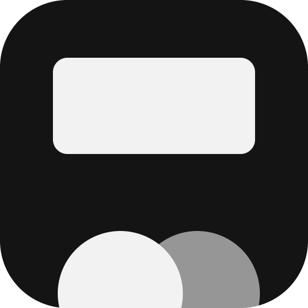

NetflityNetflix for two
Each of you plays Netflix on your own account. Play, pause and seeking stay in step, and chat and reactions live in a sidebar on the right.
To try it: open two tabs (A and B) and join the same room code.
What it does
- Sync
- Play, pause and seeking reach the other side within a second. Drift is corrected on its own.
- Buffering
- If one side buffers, both wait and start again together.
- Sidebar
- Chat and settings. Opening it narrows the video; collapsing it leaves a small dock that hides when you're not using it.
- Reactions
- Emoji float up over the video. Tap fast for a combo. Keys 1–8.
- Countdown
- Both screens start playing at the same moment after 3, 2, 1.
Install
Android tablet · Firefox
- Sign in to Netflix in Firefox and turn on Desktop site in the menu.
- Settings → About Firefox → tap the logo 5 times → back to Settings → Install extension from file → pick
Netflity.xpi. - Open a title and join with the room code you were sent.
Mac · Safari
- Run
Netflity.apponce, then turn on Netflity in Safari Settings → Extensions. - Open a title on Netflix; the dock appears on the right.
Mac · Chrome
chrome://extensions→ Developer mode.- Load unpacked →
extension/dist/chrome.